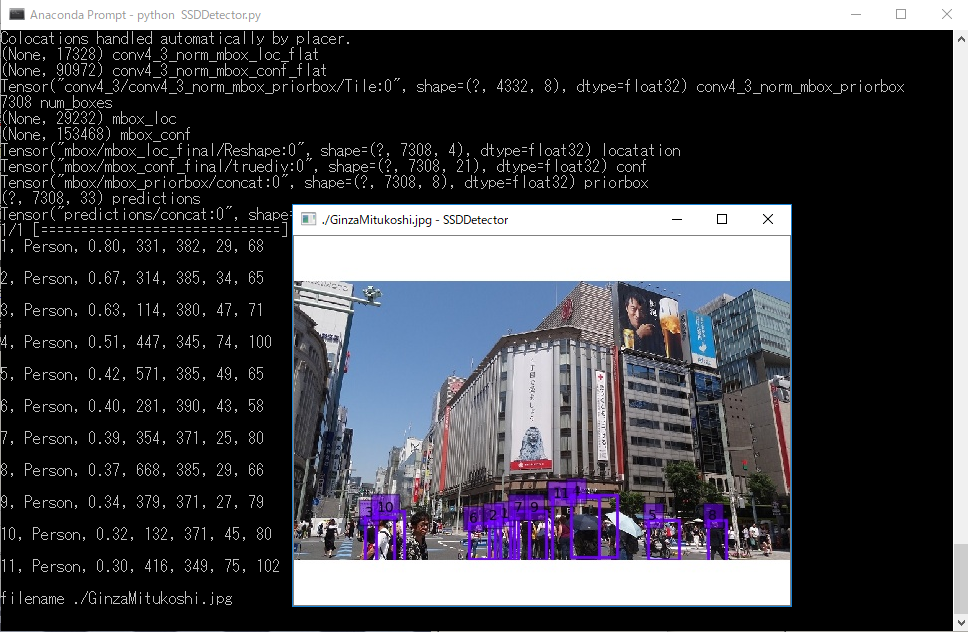

|
SOL4Py Sample: SSDDetector
|

#******************************************************************************
#
# Copyright (c) 2018-2019 Antillia.com TOSHIYUKI ARAI. ALL RIGHTS RESERVED.
#
# This program is free software: you can redistribute it and/or modify
# it under the terms of the GNU General Public License as published by
# the Free Software Foundation, either version 3 of the License, or
# (at your option) any later version.
#
# This program is distributed in the hope that it will be useful,
# but WITHOUT ANY WARRANTY; without even the implied warranty of
# MERCHANTABILITY or FITNESS FOR A PARTICULAR PURPOSE. See the
# GNU General Public License for more details.
#
# You should have received a copy of the GNU General Public License
# along with this program. If not, see <http://www.gnu.org/licenses/>.
#
#******************************************************************************
# 2019/06/20
import os
import sys
import cv2
import traceback
import errno
import configparser
from keras.applications.imagenet_utils import preprocess_input
from keras.backend.tensorflow_backend import set_session
from keras.preprocessing import image
import matplotlib.pyplot as plt
import numpy as np
from scipy.misc import imread
import tensorflow as tf
from ssd_v2 import SSD300v2
from ssd_utils import BBoxUtility
############################################################
# This class is based on SSD300v2 in ssd_v2.py and run_ssd.py program
#
class SSDDetector:
def __init__(self, argv):
app_name = os.path.basename(argv[0])
name, _ = app_name.split(".")
inifile = name + ".ini"
print("inifile {}".format(inifile))
parser = configparser.ConfigParser()
parser.read(inifile)
self.weightfile = parser.get("WEIGHT_FILE", "filename")
self.showimage = int(parser.get("SHOW_IMAGE", "show"))
self.confidence = float(parser.get("DETECTION", "confidence") )
# For example, this may take a string C:/ssd_keras/weights_SSD300.hdf5
self.classes = ['Aeroplane', 'Bicycle', 'Bird', 'Boat', 'Bottle',
'Bus', 'Car', 'Cat', 'Chair', 'Cow', 'Diningtable',
'Dog', 'Horse','Motorbike', 'Person', 'Pottedplant',
'Sheep', 'Sofa', 'Train', 'Tvmonitor']
self.n_classes = len(self.classes) + 1
self.input_shape = (300, 300, 3)
self.model = SSD300v2(self.input_shape, num_classes=self.n_classes)
self.model.load_weights(self.weightfile, by_name=True)
self.bbox_util = BBoxUtility(self.n_classes)
# For simplicity, we assume single imagefilename
def detect(self, imagefilename, save_imagefilename, save_csv_filename):
inputs = []
images = []
img = image.load_img(imagefilename, target_size=(300, 300))
img = image.img_to_array(img)
images.append(imread(imagefilename))
inputs.append(img.copy())
inputs = preprocess_input(np.array(inputs))
preds = self.model.predict(inputs, batch_size=1, verbose=1)
self.bbox_util = BBoxUtility(self.n_classes)
results = self.bbox_util.detection_out(preds)
plt.clf()
# Open a csv file
with open(save_csv_filename, "w") as csvf:
header = "id, object, score, x, y, w, h\n"
csvf.write(header)
for i, img in enumerate(images):
# Parse the outputs.
det_label = results[i][:, 0]
det_conf = results[i][:, 1]
det_xmin = results[i][:, 2]
det_ymin = results[i][:, 3]
det_xmax = results[i][:, 4]
det_ymax = results[i][:, 5]
# Get detections with confidence higher than 0.3.
top_indices = [i for i, conf in enumerate(det_conf) if conf >= self.confidence]
top_conf = det_conf[top_indices]
top_label_indices = det_label[top_indices].tolist()
top_xmin = det_xmin[top_indices]
top_ymin = det_ymin[top_indices]
top_xmax = det_xmax[top_indices]
top_ymax = det_ymax[top_indices]
colors = plt.cm.hsv(np.linspace(0, 1, 21)).tolist()
fig = plt.imshow(img / 255.)
current_axis = plt.gca()
# We don't need any axis and extra spaces arround the image.
current_axis.set_axis_off()
current_axis.autoscale(False)
extent = current_axis.get_window_extent().transformed(plt.gcf().dpi_scale_trans.inverted())
for i in range(top_conf.shape[0]):
xmin = int(round(top_xmin[i] * img.shape[1]))
ymin = int(round(top_ymin[i] * img.shape[0]))
xmax = int(round(top_xmax[i] * img.shape[1]))
ymax = int(round(top_ymax[i] * img.shape[0]))
score = top_conf[i]
label = int(top_label_indices[i])
label_name = self.classes[label - 1]
# Display id only to avoid overwrapping of display texts.
display_txt = "{}".format(i + 1)
coords = (xmin, ymin), xmax-xmin+1, ymax-ymin+1
csv = "{}, {}, {:0.2f}, {}, {}, {}, {}\n".format(i+1, label_name,
score, xmin, ymin, xmax-xmin+1, ymax-ymin+1)
print(csv)
csvf.write(csv)
color = colors[label]
current_axis.add_patch(plt.Rectangle(*coords, fill=False, edgecolor=color, linewidth=2))
current_axis.text(xmin, ymin, display_txt, bbox={'facecolor':color, 'alpha':0.5})
plt.savefig(save_imagefilename, bbox_inches=extent)
if self.showimage == 1:
self.show_image(save_imagefilename)
# Read and show an image by using OpenCV APIs.
def show_image(self, filename):
print("filename {}".format(filename))
cvimage = cv2.imread(filename);
title = filename + " - " + "SSDDetector"
cv2.imshow(title, cvimage);
cv2.waitKey(0)
############################################################
#
if __name__=="__main__":
try:
np.set_printoptions(suppress=True)
config = tf.ConfigProto()
config.gpu_options.per_process_gpu_memory_fraction = 0.45
set_session(tf.Session(config=config))
detector = SSDDetector(sys.argv)
filename = "GinzaMitukoshi.jpg"
imagefilepath = "C:/images/test_images/" + filename
save_imagefilename = "./" + filename
save_csvfilename = "./" + filename + ".csv"
detector.detect(imagefilepath, save_imagefilename, save_csvfilename)
except:
traceback.print_exc()
pass
Last modified:21 Jun. 2019